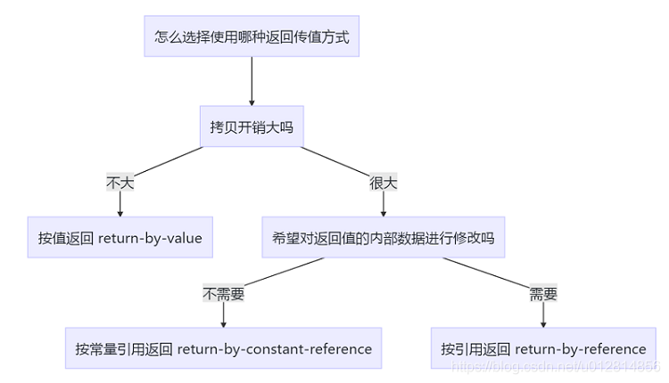

About Function
函数指针
type (*p)(param_list); //p指向一个包含param_list形参、返回值类型type的函数；
p = fun_name; //函数名可以自动转换成指针
p= &fun_name; //也可以通过&获取
// p(..) 与 (*P)(..)是等效的，即无需解引用函数指针即可调用该函数；
// another test
// 上面的p是一个对象，其类型是一个函数指针
typedef type(*T)(param_list //这里是为函数指针类型重新定义了“T”类型名
T t1;
t1(...);
函数指针形参：不能定义函数类型的形参，但是形参可以是指向函数类型的指针。
void foo(type fun(param_list)); or void foo(type(*p)(param_list));
重载(overload)
函数重载: 函数名称相同，但函数签名不同，函数签名包括参数列表、const（const member fucntion）.
- const形参：一个拥有顶层const的形参无法和另一个没有顶层const的形参区分开来；如果形参是某种类型的指针或引用，则通过区分其指向的是常量对象还是非常量对象可以实现函数重载，此时的const是底层的。
- 成员函数重载的特征:
（1）相同的范围（在同一个类中;
（2）函数名字相同;
（3）参数不同;
（4）virtual 关键字可有可无, 其并非函数签名的一部分。
覆盖(override)
指派生类函数覆盖基类函数，特征是：
（1）不同的范围(分别位于派生类与基类);
（2）函数名字相同;
（3）函数签名相同;
（4）基类函数必须有virtual 关键字;
隐藏
派生类的函数屏蔽了与其同名的基类函数，规则如下：
（1）如果派生类的函数与基类的函数同名，但是参数不同。此时，不论有无virtual关键字，基类的函数将被隐藏（注意别与重载混淆）。
（2）如果派生类的函数与基类的函数同名，并且参数也相同，但是基类函数没有virtual 关键字。此时，基类的函数被隐藏（注意别与覆盖混淆）
此时欲调用父类中的函数，可以通过下列形式: Derived.Base::fcn();
函数参数
- 当一个函数参数是模板类型参数的一个普通左值引用，则只能传递一个左值实参；而函数参数是右值引用时，则可以传递任意实参；
其中若将一个左值传递给这样的参数，则推断出的模板参数实参类型是一个左值引用（根据引用折叠规则得到）． - 对于非函数模板，右值类型参数只能接受一个右值。
- 如果一个函数参数是指向模板类型参数的右值引用，它对应的实参的const属性和左值/右值属性将得到保持。
当用于一个指向模板参数类型的右值引用函数参数时，std::forward会保持实参类型的所有细节。
当有多个重载模板对一个调用提供同样好的匹配时，应选择最特例化的版本。
对于一个调用，如果一个非函数模板与一个函数模板提供同样的好的匹配，则选择非模板版本。 - 如果函数参数类型是指针，记住在函数体内修改指针指向的对象是可以同步的，而修改指针本身不会同步(因为修改的是原指针的拷贝)；传入指针的引用，则可以同时同步修改指针本身和指针所指向对象。
- 函数实参查找规则：
1>由内向外； 2>当给函数传递一个类类型的对象时，除了在常规的作用域查找外，还会查找实参类以及实参类基类所属的命名空间。 在这些命名空间中所有与被调用函数同名的函数都将被添加到候选集中，即使某些函数在调用时不可见； 这一规则对于传递类的引用或指针的调用同样有效； 3>当类声明一个友元时，该友元声明并没有使得友元本身可见，但可以认为其是最近的外层命名空间的成员。
函数可变数量参数
- 若所有的实参类型相同，可以传递一个名为initializer_list的标准库类型（定义在同名头文件中）。initializer_list对象中的元素用于是常量值，无法修改。
eg: void print(initializer_list<string> list){...};
print({“error”, “xx”}); //序列必须放在{}中
- 针对类型不同的实参，使用可变参数模板
- 省略符形参，其只能出现在形参列表的最后一个位置，形式如下：
void foo(param_list, ...);
void foo(...);
其应该仅仅用于C和C++都通用的类型。
函数返回类型

return-by-value, 如果返回的是一个非临时变量的左值，返回时会发生拷贝；如果返回的是一个临时变量或者就是一个临时的右值，则会转化为移动来节省拷贝开销。
用const修饰return-by-value一般是没有意义的，因为返回的本身就是值的拷贝。不过在重载运算符时，如果参数是自定义类型，使用const T作为返回值类型，可以避免如“if(t1*t2=t3)”愿意是判断相等，却变成了向一个右值赋值，return-by-const-value可以检测出这种错误。处于此种考虑 return-by-const-value 也是十分常见的，不会带来额外的困扰，
还可以避免前述问题。
return-by-const-reference, 如果以一个普通变量来接受返回值，则依旧会发生拷贝，而以常量引用来接受，则不会发送拷贝转换，此时也不能对返回值进行修改(多见的是const-reference传参，而非返回)。此外以non-const 引用类型来接受返回值是无法通过编译的，因为这意味着接受者可能会改变对象。
return-by-reference, 多见于调用者需要对返回对象的内部数据进行修改，或者返回类型不能被拷贝(例如IO流)。